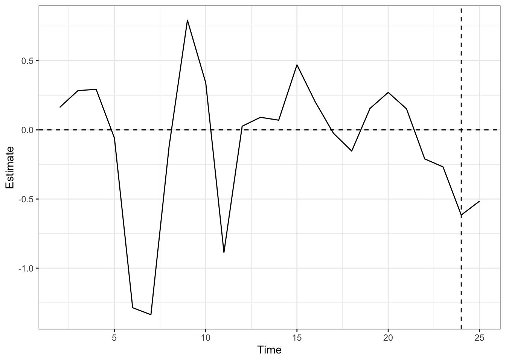

load(file="../data/lottery_lang.Rda")Advanced Synthetic Control Analysis: COVID-19 Vaccine Lotteries
Setting and Data
This handout continues the analyses in “Synthetic Control Analysis: COVID-19 Vaccine Lotteries” using alternative SC methods. Again, we use the data and analysis based on that by Lang et al. (2023).
First, load the data into R.
Libraries
Again, we will use tidyverse and knitr for general coding, and tidysynth for standard SC. We now use two additional packages:
augsynth, which additionally allows for augmented SC and staggered adoption SC. For the most recent version ofR, this has to be installed from GitHub using thedevtoolspackage.gsynth, which can fit interactive fixed effects and generalized SC models.
We now load the required libraries.
library(tidyverse)
library(knitr)
library(tidysynth)
## If augsynth has not yet been installed, run the following lines:
# library(devtools)
# devtools::install_github("ebenmichael/augsynth")
library(augsynth)
# install.packages("gsynth") # Run once if not yet installed
library(gsynth)Augmented Synthetic Control
Using augsynth Function
We can re-fit the Ohio SC analysis using the augsynth function from the augsynth package. By default this package uses all pre-treatment outcome variables as the predictors.
### First, create a dataset with a treatment indicator:
OH_data <- lang_0624 %>%
dplyr::filter(type2 %in% c("Ohio","Non-Lottery State")) %>%
mutate(treated=if_else(state=="OH" & rel_week >= 0,1,0))
### Then, run the augsynth function:
OH_as <- augsynth(form=people_fully_vaccinated_per_hundred~treated, # outcome~treatment
unit=stateF, # units, as a factor variable
time=week, # time period variable
data=OH_data, # data set
progfunc="None", # fits without any outcome model
scm=TRUE, # fits with SC weighting
fixedeff=FALSE) # fits without de-meaning/interceptsOne outcome and one treatment time found. Running single_augsynth.## Prints average ATT estimate in post-intervention periods:
OH_as
Call:
single_augsynth(form = form, unit = !!enquo(unit), time = !!enquo(time),
t_int = t_int, data = data, progfunc = "None", scm = TRUE,
fixedeff = FALSE)
Average ATT Estimate: -1.024## Prints estimate for each time period with conformal inference CI:
summary(OH_as)
Call:
single_augsynth(form = form, unit = !!enquo(unit), time = !!enquo(time),
t_int = t_int, data = data, progfunc = "None", scm = TRUE,
fixedeff = FALSE)
Average ATT Estimate (p Value for Joint Null): -1.02 ( 0.72 )
L2 Imbalance: 0.868
Percent improvement from uniform weights: 72%
Avg Estimated Bias: NA
Inference type: Conformal inference
Time Estimate 95% CI Lower Bound 95% CI Upper Bound p Value
19 -0.355 -2.498 1.788 0.571
20 -0.837 -2.980 1.306 0.510
21 -0.961 -3.104 1.182 0.456
22 -1.257 -3.400 0.887 0.514
23 -1.272 -3.415 0.871 0.709
24 -1.220 -3.363 0.923 0.720
25 -1.266 -3.409 0.878 0.779We can then compare the original SC fit from the tidysynth package to the augsynth SC fit with outcome model and fixed effects both off. Note that the augsynth plot calls can take a minute to run.
## The original SC fit from the tidysynth package:
load(file="synth_ohio.Rda") ## Loaded from previous analysis handout
synth_ohio %>% plot_differences() +
labs(x="Weeks from Lottery Announcement",
y="Difference in Percent Fully Vaccinated, Observed–Synthetic",
title=NULL) +
theme_bw()## The new SC fit from the augsynth package:
#| fig-cap: "Time series of the difference, Observed – Synthetic Ohio, in percent fully vaccinated rate by week, starting from the week ending 1/17/21."
#| fig-alt: "Line plot that is the same as the previous plot, except the x-axis goes from 0 to 25, with a vertical line at 19."
plot(OH_as,
inf=FALSE) # Suppresses plotting of conformal inference CIs
These plots give the same results!
In both cases, the pre-treatment fit is fairly good but not exact. We can alter the options to see different results.
We can try a ridge outcome model first:
### Run the augsynth fit with a ridge outcome model and SC
OH_as_r <- augsynth(form=people_fully_vaccinated_per_hundred~treated, # outcome~treatment
unit=stateF, # units, as a factor variable
time=week, # time period variable
data=OH_data, # data set
progfunc="Ridge", # fits with ridge outcome model
scm=TRUE, # fits with SC weighting
fixedeff=FALSE) # fits without de-meaning/interceptsOne outcome and one treatment time found. Running single_augsynth.## Prints average ATT estimate in post-intervention periods:
OH_as_r
Call:
single_augsynth(form = form, unit = !!enquo(unit), time = !!enquo(time),
t_int = t_int, data = data, progfunc = "Ridge", scm = TRUE,
fixedeff = FALSE)
Average ATT Estimate: -1.037## The ridge-adjusted SC fit from the augsynth package:
#| fig-cap: "Time series of the difference, Observed – Ridge-adjusted Synthetic Ohio, in percent fully vaccinated rate by week, starting from the week ending 1/17/21."
#| fig-alt: "Line plot that is very similar to the previous plot."
plot(OH_as_r,
inf=FALSE) # Suppresses plotting of conformal inference CIsThis is very similar to the previous fit. We can try adding unit fixed effects (de-mean or intercept-shifted SC) instead:
### Run the augsynth fit with fixed effects and no outcome model
OH_as_fe <- augsynth(form=people_fully_vaccinated_per_hundred~treated, # outcome~treatment
unit=stateF, # units, as a factor variable
time=week, # time period variable
data=OH_data, # data set
progfunc="None", # fits without outcome model
scm=TRUE, # fits with SC weighting
fixedeff=TRUE) # fits with de-meaning/interceptsOne outcome and one treatment time found. Running single_augsynth.## Prints average ATT estimate in post-intervention periods:
OH_as_fe
Call:
single_augsynth(form = form, unit = !!enquo(unit), time = !!enquo(time),
t_int = t_int, data = data, progfunc = "None", scm = TRUE,
fixedeff = TRUE)
Average ATT Estimate: -1.739## The de-meaned SC fit from the augsynth package:
#| fig-cap: "Time series of the difference, Observed – de-meaned Synthetic Ohio, in percent fully vaccinated rate by week, starting from the week ending 1/17/21."
#| fig-alt: "Line plot that fluctuates near 0, never exceeding 0.5 in either direction, from Week 0 to 18, and then steadily decreases to around -2 in Week 22 and stays around there through Week 25."
plot(OH_as_fe,
inf=FALSE) # Suppresses plotting of conformal inference CIs
Some of the fluctuations are smoothed out here, as the SC fit is just matching the time trend without needing to match the level of the pre-intervention outcome. This produces a smoother and larger estimate of the intervention effect. However, this requires a different assumption: that matching de-meaned outcomes pre-intervention leads to stable weights.
Analysis of Other States
As we saw, both New Mexico and Maine implemented lotteries, but may be outside of the “convex hull” condition required for SC.
ggplot(data=lang_0624,
mapping=aes(group=state, linetype=type2, color=type2,
alpha=type2, linewidth=type2,
x=last_day,y=people_fully_vaccinated_per_hundred)) +
scale_alpha_manual(name=NULL, breaks=c("Ohio","New Mexico","Maine",
"Other Lottery State",
"Non-Lottery State"),
values=c(1,1,1,0.5,0.8)) +
scale_linewidth_manual(name=NULL, breaks=c("Ohio","New Mexico","Maine",
"Other Lottery State",
"Non-Lottery State"),
values=c(1.3,1.3,1.3,1,1)) +
geom_line() + theme_bw() +
geom_vline(data=lang_0624 %>%
dplyr::filter(type2 %in% c("Ohio","New Mexico","Maine"),
rel_week==0),
mapping=aes(xintercept=lott_date, group=type2, color=type2),
linetype="dotted") +
labs(x="Day (2021)", y="Percent Fully Vaccinated",
linetype=NULL,color=NULL)We can create data sets for both New Mexico and Maine, and then fit various SC models.
## Create data set for New Mexico as treated unit:
NM_data <- lang_0624 %>%
dplyr::filter(type2 %in% c("New Mexico","Non-Lottery State")) %>%
mutate(treated=if_else(state=="NM" & rel_week >= 0,1,0))
## Create data set for Maine as treated unit:
ME_data <- lang_0624 %>%
dplyr::filter(type2 %in% c("Maine","Non-Lottery State")) %>%
mutate(treated=if_else(state=="ME" & rel_week >= 0,1,0))
## Fit standard SCs using augsynth:
NM_as <- augsynth(form=people_fully_vaccinated_per_hundred~treated,
unit=stateF,
time=week,
data=NM_data,
progfunc="None", scm=TRUE, fixedeff=FALSE)One outcome and one treatment time found. Running single_augsynth.ME_as <- augsynth(form=people_fully_vaccinated_per_hundred~treated,
unit=stateF,
time=week,
data=ME_data,
progfunc="None", scm=TRUE, fixedeff=FALSE)One outcome and one treatment time found. Running single_augsynth.Starting with New Mexico, we can plot the standard SC and see the weights it gives:
plot(NM_as,
inf=FALSE)## Create a data set with the weights and sort largest to smallest in absolute value.
NM_as_w <- tibble(State=rownames(NM_as$weights),
Weight=NM_as$weights[,1]) %>%
arrange(desc(abs(Weight)))
## Print results:
NM_as_w# A tibble: 32 × 2
State Weight
<chr> <dbl>
1 CT 5.49e-1
2 AK 4.48e-1
3 SD 2.86e-3
4 KS -1.24e-8
5 FL -6.50e-9
6 DC -5.81e-9
7 TX -4.84e-9
8 UT -4.73e-9
9 AZ -4.56e-9
10 GA -4.53e-9
# ℹ 22 more rowsClearly, the pre-treatment fit is poor here, and the synthetic control is underestimating the true outcome value because New Mexico had very high vaccination rates even before the intervention. Note that some weights appear negative but essentially round to 0.
Adding a fixed effects term will be able to center the pre-treatment fit closer to zero.
## Fit de-meaned SC using augsynth:
NM_as_fe <- augsynth(form=people_fully_vaccinated_per_hundred~treated,
unit=stateF,
time=week,
data=NM_data,
progfunc="None", scm=TRUE, fixedeff=TRUE)One outcome and one treatment time found. Running single_augsynth.plot(NM_as_fe,
inf=FALSE)
We can print the weights that come from the de-meaned SC fit. Notice there are meaningful differences from the standard SC fit weights.
## Create a data set with the weights and sort largest to smallest in absolute value.
NM_as_fe_w <- tibble(State=rownames(NM_as_fe$weights),
Weight=NM_as_fe$weights[,1]) %>%
arrange(desc(abs(Weight)))
## Print results:
NM_as_fe_w# A tibble: 32 × 2
State Weight
<chr> <dbl>
1 CT 3.83e-1
2 SD 3.51e-1
3 AK 2.33e-1
4 RI 3.27e-2
5 KS -6.58e-9
6 FL -5.88e-9
7 TX -4.94e-9
8 UT -4.52e-9
9 GA -4.02e-9
10 MO -3.95e-9
# ℹ 22 more rowsThere remain large fluctuations in the pre-treatment fit. A ridge outcome model may be able to de-bias these fluctuations.
## Fit ridge-adjusted SC using augsynth:
NM_as_r <- augsynth(form=people_fully_vaccinated_per_hundred~treated,
unit=stateF,
time=week,
data=NM_data,
progfunc="Ridge", scm=TRUE, fixedeff=FALSE)One outcome and one treatment time found. Running single_augsynth.plot(NM_as_r,
inf=FALSE)
We can print the weights that come from the ridge-augmented SC fit. Notice there are meaningful differences from the previous weights and now there are states that get non-negligible negative weights.
## Create a data set with the weights and sort largest to smallest in absolute value.
NM_as_r_w <- tibble(State=rownames(NM_as_r$weights),
Weight=NM_as_r$weights[,1]) %>%
arrange(desc(abs(Weight)))
## Print results:
NM_as_r_w# A tibble: 32 × 2
State Weight
<chr> <dbl>
1 UT -0.328
2 RI 0.318
3 HI 0.305
4 SD 0.296
5 IN 0.285
6 KS -0.266
7 AK 0.235
8 PA -0.226
9 CT 0.151
10 FL 0.150
# ℹ 22 more rowsTurning now to Maine, we can plot the standard SC:
plot(ME_as,
inf=FALSE)
Clearly, again, the pre-treatment fit is poor, with overestimation early on and underestimation closer to the start of treatment.
Since the pre-treatment gaps are roughly centered around 0, adding a fixed effects term will not have much effect.
## Fit de-meaned SC using augsynth:
ME_as_fe <- augsynth(form=people_fully_vaccinated_per_hundred~treated,
unit=stateF,
time=week,
data=ME_data,
progfunc="None", scm=TRUE, fixedeff=TRUE)One outcome and one treatment time found. Running single_augsynth.plot(ME_as_fe,
inf=FALSE)A ridge outcome model may be more useful here to de-bias the fluctuations.
## Fit ridge-adjusted SC using augsynth:
ME_as_r <- augsynth(form=people_fully_vaccinated_per_hundred~treated,
unit=stateF,
time=week,
data=ME_data,
progfunc="Ridge", scm=TRUE, fixedeff=FALSE)One outcome and one treatment time found. Running single_augsynth.plot(ME_as_r,
inf=FALSE)
The ridge adjustment may be more useful if it is not capturing the fixed effects as well, so we can use both unit fixed effects and a ridge outcome model.
## Fit de-meaned and ridge-adjusted SC using augsynth:
ME_as_r_fe <- augsynth(form=people_fully_vaccinated_per_hundred~treated,
unit=stateF,
time=week,
data=ME_data,
progfunc="Ridge", scm=TRUE, fixedeff=TRUE)One outcome and one treatment time found. Running single_augsynth.plot(ME_as_r_fe,
inf=FALSE)Clearly, this achieves an excellent pre-treatment fit, but it may in fact be over-fitting the data. The assumptions should be carefully considered in this model. We can look at the weights still to assess their reasonability, but they will not necessarily be interpretable. As you can see, there are negative weights and weights above one in this fit, so substantial extrapolation is occurring.
## Check the weights:
ME_as_r_fe$weights [,1]
AK 0.039666426
AL 0.001576102
AZ 0.487095706
CT 0.613535059
DC 0.010734651
FL -0.542294673
GA -0.493500003
HI -0.102509942
IA -0.180786723
ID -0.347788755
IN -0.089471107
KS -0.124123003
MN 0.208748176
MO 0.133386519
MS -0.623625547
MT -0.139686874
ND -0.364959067
NE 0.451779343
NH -0.067190685
NJ -0.160950512
OK 0.744581550
PA 0.933039201
RI 0.015997051
SC 1.096833147
SD -0.584293622
TN 0.337447651
TX -1.070170055
UT 0.086918669
VA -0.179894025
VT 0.267111606
WI 0.192469496
WY 0.450324242Discussion Questions
- Are the trade-offs of ASCM worthwhile for these other states?
Generalized Synthetic Control and Interactive Fixed Effects
Another option is to fit the generalized SC (interactive fixed effects) model using the gsynth package, which can also accommodate matrix completion.
ME_gsc <- gsynth(formula=people_fully_vaccinated_per_hundred~treated,
data=ME_data,
X=NULL,
index=c("stateF","week"), force="two-way",
r=0, CV=TRUE)Cross-validating ...
r = 0; sigma2 = 11.66101; IC = 2.93204; PC = 10.82591; MSPE = 35.36067
r = 1; sigma2 = 1.40596; IC = 1.27501; PC = 2.46655; MSPE = 0.56198
r = 2; sigma2 = 0.45730; IC = 0.59305; PC = 1.18116; MSPE = 0.25032
r = 3; sigma2 = 0.25203; IC = 0.42115; PC = 0.86045; MSPE = 0.20420*
r = 4; sigma2 = 0.15892; IC = 0.36661; PC = 0.67508; MSPE = 0.23371
r = 5; sigma2 = 0.11782; IC = 0.45662; PC = 0.59902; MSPE = 0.24672
r* = 3This uses cross-validation to determine that it should include 3 unknown time-varying coefficients. We can print the weights as well, noting that they can be negative and above 1.
ME_gsc$wgt.implied ME
AK -0.30182691
AL -0.65425649
AZ -0.24764613
CT 0.90931096
DC 0.46124969
FL -0.02015400
GA -0.46026913
HI 0.44983403
IA 0.27515496
ID -0.47304919
IN -0.31751274
KS -0.06822393
MN 0.40910716
MO -0.31374686
MS -0.84941481
MT -0.15877341
ND -0.39551912
NE 0.12857329
NH 0.53801918
NJ 0.67137054
OK -0.47079063
PA 0.33700698
RI 0.82909225
SC -0.35903107
SD 0.00681042
TN -0.52381957
TX -0.20264387
UT -0.39393535
VA 0.39997723
VT 1.11924660
WI 0.30562813
WY -0.62976822plot(ME_gsc,
inf=FALSE)Uncertainty estimates not available.The generalized SC can also be an outcome model used for augmentation in augsynth().
## Then we can fit the model using the GSYN option for progfunc:
ME_gsynth <- augsynth(form=people_fully_vaccinated_per_hundred~treated,
unit=stateF,
time=week,
data=ME_data,
progfunc="GSYN")One outcome and one treatment time found. Running single_augsynth.Cross-validating ...
r = 0; sigma2 = 11.66101; IC = 2.93204; PC = 10.82591; MSPE = 31.94484
r = 1; sigma2 = 1.40596; IC = 1.27501; PC = 2.46655; MSPE = 0.41149
r = 2; sigma2 = 0.45730; IC = 0.59305; PC = 1.18116; MSPE = 0.21866
r = 3; sigma2 = 0.25203; IC = 0.42115; PC = 0.86045; MSPE = 0.14212*
r = 4; sigma2 = 0.15892; IC = 0.36661; PC = 0.67508; MSPE = 0.31365
r = 5; sigma2 = 0.11782; IC = 0.45662; PC = 0.59902; MSPE = 0.73545
r* = 3plot(ME_gsynth,
inf=FALSE)
Again, different assumptions are being made here, and should be carefully considered. This appears more similar to the initial SC fit, however it has a larger effect estimate.
Generalized SCM also allows specified time-varying covariates to be used:
## Creating lag variable:
ME_data <-
ME_data %>%
group_by(state) %>%
mutate(lag.pfv = dplyr::lag(people_fully_vaccinated_per_hundred,
n = 1, default = NA))
ME_gsc_cov <- gsynth(formula=people_fully_vaccinated_per_hundred~treated+
new_case_per_million+new_death_per_million+lag.pfv,
data=ME_data %>% dplyr::filter(!is.na(lag.pfv)),
index=c("stateF","week"), force="two-way",
r=0, CV=TRUE)Cross-validating ...
r = 0; sigma2 = 0.44184; IC = -0.30556; PC = 0.40762; MSPE = 0.54756
r = 1; sigma2 = 0.28690; IC = -0.27100; PC = 0.51642; MSPE = 0.39000
r = 2; sigma2 = 0.21858; IC = -0.09454; PC = 0.58583; MSPE = 0.36298
r = 3; sigma2 = 0.16552; IC = 0.05791; PC = 0.58975; MSPE = 0.22859*
r = 4; sigma2 = 0.13664; IC = 0.27875; PC = 0.60786; MSPE = 0.24684
r = 5; sigma2 = 0.12170; IC = 0.55760; PC = 0.64951; MSPE = 0.26399
r* = 3plot(ME_gsc_cov,
inf=FALSE)Uncertainty estimates not available.This does seem to improve the fit to some extent, but does not have a noticeable effect on the effect estimates.
Staggered Adoption
Finally, we can consider the multi-period, multi-unit staggered adoption case with the augmented synthetic control. We first set up the full data set by adding a treatment indicator variable, and then fit it using augsynth. Note that this defaults to including two-way fixed effects, balancing all pre-intervention periods, and partially pools the average and individual SC fits using the heuristic given by Ben-Michael et al. (2022).
## Create data set with indicator for treatment
Mult_data <- lang_0624 %>%
mutate(treated=if_else(!lottery,0,if_else(rel_week>=0,1,0)))
## Fit augmented SC on full data set:
Mult_as <- augsynth(form=people_fully_vaccinated_per_hundred~treated,
unit=stateF,
time=week,
data=Mult_data)More than one treatment time found. Running multisynth.## Print results and summary:
Mult_as
Call:
multisynth(form = form, unit = !!enquo(unit), time = !!enquo(time),
data = data)
Average ATT Estimate: -0.170summary(Mult_as)
Call:
multisynth(form = form, unit = !!enquo(unit), time = !!enquo(time),
data = data)
Average ATT Estimate (Std. Error): -0.170 (2.345)
Global L2 Imbalance: 0.034
Scaled Global L2 Imbalance: 0.042
Percent improvement from uniform global weights: 95.8
Individual L2 Imbalance: 0.386
Scaled Individual L2 Imbalance: 0.112
Percent improvement from uniform individual weights: 88.8
Time Since Treatment Level Estimate Std.Error lower_bound upper_bound
0 Average -0.1157016 2.268001 -4.136968 4.716483
1 Average -0.2238257 2.424699 -4.481696 4.922878The average effect is estimated to be -0.170, increasing from -0.115 in the first treated period to -0.224 in the second, although there are large standard errors throughout. We can plot the fit, which defaults to plotting all individual fits and the average:
plot(Mult_as)Joining with `by = join_by(Level)`Warning: The `<scale>` argument of `guides()` cannot be `FALSE`. Use "none" instead as
of ggplot2 3.3.4.
ℹ The deprecated feature was likely used in the augsynth package.
Please report the issue to the authors.Warning: Removed 57 rows containing missing values or values outside the scale range
(`geom_line()`).Warning: Removed 57 rows containing missing values or values outside the scale range
(`geom_point()`).Warning: ggrepel: 11 unlabeled data points (too many overlaps). Consider
increasing max.overlapsDiscussion Questions
- Given what we know about staggered adoption issues in the DID case, how do we interpret these results? Are there any additional issues we need to consider?